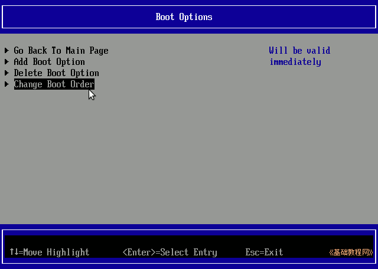
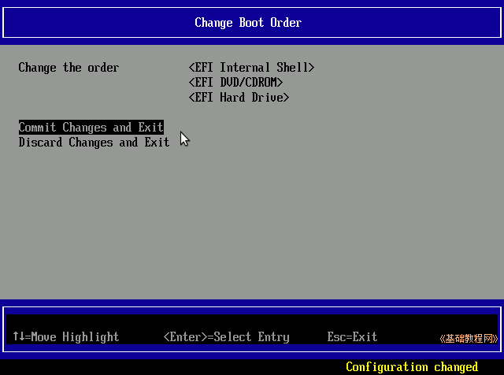
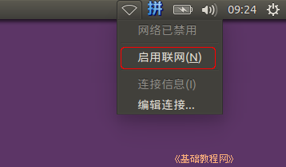
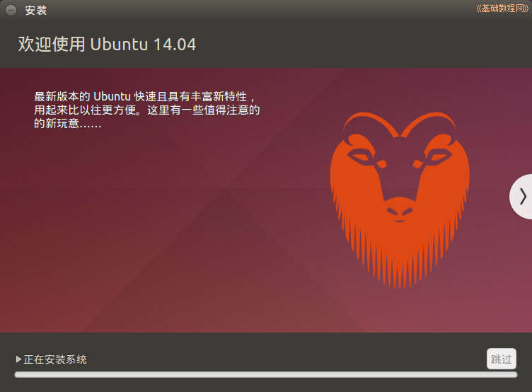

Ubuntu安装基础教程
作者：TeliuTe 来源：基础教程网
概述：
1.复制安装镜像和启动文件到FAT32分区
2.查找出FAT32分区的分区号，修改启动配置文件
3.启动FAT32分区的安装镜像，开始安装
4.UEFI/GPT基础知识，请参阅：网络文摘
UEFI Win7/8/Ubuntu 硬盘安装Ubuntu14.04 返回目录 下一课UEFI 可以识别FAT32分区中的efi文件，一般用GPT硬盘分区表，系统第一个分区格式化为 FAT32 efi 分区，存放系统引导项，操作中注意细心，下面来看一个练习；
1、准备分区
1）先备份，在Windows 系统下，使用其他辅助工具，或者以管理员身份运行cmd，运行 diskpart ，给efi分区分配一个盘符，然后就可以打开，复制出里面的文件，然后再关闭盘符；
详细参阅：http://teliute.org/fw/guidpart.html
2）准备存放安装镜像的FAT32分区，5G大小，再准备一个10G左右的空闲分区，作为要安装的系统分区，在 Ubuntu 的 gparted 里可以查得分区号是sda5；
3）将下载的Ubuntu14.04镜像文件，复制到FAT32分区中，用压缩软件7-zip或WinRAR等打开镜像文件，将其中的boot文件夹、EFI文件夹解压到FAT32分区中；
4）再打开casper文件夹，将其中的 initrd.lz 和 vmlinuz.efi 也解压到FAT32分区中；
5）最终5G的FAT32分区中有两个文件夹、三个文件在里面，仔细检查一下；
6）boot/grub/文件夹里的grub.cfg还要修改一下，我们需要查出FAT32分区的序号，接着下面的步骤；
2、启动 EFI SHell
1）重启动计算机，开机时按F12(或F2，或Del键)，进入BIOS设置，找到boot或startup菜单项，点击进入，如果可以将语言设为中文，
Win8需要关闭快速启动，关闭安全启动，请咨询系统或计算机提供商获得详细操作步骤；
2）找到 Boot Manager 点击或按回车进入，在这里可以直接选择要启动的项；
3）找到 EFI Internal Shell 点击启动，如果按F12可以看到也可以直接启动它；
4）如果首页找不到 Boot Manager，那么就点击进入 Boot Maintenance Manager 菜单项；
5）在 Boot Maintenance Manager 中，点击进入 Boot Option，再点击 Change Boot Order，更改启动顺序；

6）进入排序界面后，按回车键调出蓝色排序框，再按减号键，将 DVD 和 Hard 排到下边，让 EFI Shell 排到最上边，按回车确认；
7）点击 Commit Chanages and Exit，保存并退出；

8）返回到首页后，点 Continue 开始启动，或者点Save and Exit 退出 BIOS 设置，开始启动计算机；
3、查找FAT32分区号，修改/boot/grub/grub.cfg
如果在1.2里已经查出了FAT32的分区号，可以直接修改分区里面 /boot/grub/grub.cfg 文件；
1）成功启动 EFL Shell 会列出所有设备，前面标有FS的是可启动的，找出5G的FAT32分区号，一般是第二个FS1，其中HD表示硬盘，DVD表示光盘，USB表示U盘；
2）输入exit退出或者按Ctrl+Alt+Del重启计算机，进入原来的系统或Live CD系统中，
打开5G的FAT32分区，依次打开 boot、grub 文件夹找到grub.cfg文件，用记事本或文本编辑器打开；
3）前面的内容不要动，找到 menuentry 开头的四段，把它们都删除了，换成下面的内容，
第二行后面的数字换成自己查出来的，第三、四行中的镜像文件名改成对应的，本课文件夹中有这个grub.cfg 文件(点右键，选“目标另存为”)；
4）保存退出，重新启动计算机，启动到 EFI Shell 命令行界面；
4、硬盘启动
1）进到 EFI Shell 后，输入5G FAT32分区前面的fs号，这里是 FS1:（fs1冒号），输入下面的命令后按回车键
2）这时前面的提示符变成了黄色的FS1:\>，再接着输入 cd \efi\boot（依次输入字母 cd 空格，斜杠，字母efi，斜杠，boot，按回车键），
输入一个字母后按一下Tab键可以自动补全；
3）这时前面的提示符变成了黄色的FS1:\EFI\BOOT\>，再接着输入 bootx64.efi，按回车键启动系统（输入字母b后按一下Tab键，自动补全输入）；
4）这三行命令是切换到FAT32分区的 /EFI/BOOT 文件夹中，然后运行里面的 BOOTx64.EFI 文件，每个命令后面都要按一下回车键，如下图所示；
5）按回车后进入Grub引导菜单，默认选中了第一项“Install Ubuntu”，按回车键继续；
6）按回车键后开始引导 Ubuntu 系统；
7）等一会就进入一个桌面，这就是试用的 live cd 桌面，桌面左上边有有两个图标，右上角是“关机”按钮；
8）对于硬盘安装，点一下左上角的圆圈按钮，稍等在旁边出来的文本框中输入字母 ter 然后点击下边出来的终端图标，
如果出来中文，点一下输入条上的“中”变成“英”，拖到一边即可；

9）输入命令 sudo umount -l /isodevice 然后按一下回车键，没什么提示就是成功了，关闭终端；
10）点右上角的网络图标，点击把“启用网络”前面的勾去掉，断开网络；

5、安装系统
1）双击桌面“安装Ubuntu14.04 LTS”图标，稍等出来一个“欢迎”面板，左侧应该选中了“中文(简体)”，
如果不是就在左边选中它，然后点右下角“继续”按钮；
2）第2步是检查准备情况，要求磁盘空间足够，不要连接网络，一般不勾选更新和第三方软件，直接点“继续”按钮；
3）接下来第3步是询问安装到哪个分区，选择最下边的“其他选项”，点“继续”按钮；
4）接下来出来磁盘分区情况，将要在sda1中存放efi引导文件，在sda4上安装系统，如果要新建分区和转换分区可以参考前面的第7、13、15、16、19课，这儿是安装到之前14.04的Ext4分区上；
5）点击选中第一个efi分区，从顶部的分区类型和大小已使用情况来判断，一般是第一个主分区，然后点下边的“更改”(Change..) 按钮；

6）在出来的对话框中，设定用于 EFI 启动分区，不打勾“格式化”，点“确定”；
7）点击选中计划要安装系统的分区，可以根据分区类型和大小来确定，然后点下边的“更改”(Change..) 按钮，
在出来的对话框中，设定用于分区的格式Ext4，打勾“格式化”，在“挂载点”右边点一下，选 “/”，点“确定”，
注意，格式化会删除这个分区上的所有文件，请提前备份重要数据；
点“确定”出来提示点继续，回到分区面板，检查一下分区编辑好了，如果还有 /home 分区，按原来的设，一般不打勾“格式化”，只需提前清理里面的配置文件
8）检查无误后，点“现在安装”，如果提示没有交换空间，点“继续”，这个是用于休眠的，大小跟内存相同的分区，一般不用它；

9）然后出来询问地区，点“继续”即可，或者在地图上找找自己所在的地区，这时已经开始安装了；

10）接下来是键盘布局，一般是“汉语”，直接点“前进”继续；

11）接下来是设定自己的用户名(小写字母)和密码等，从上到下依次输入即可，然后点“继续”；

12）然后接着继续安装过程，可以看一下系统的介绍；

13）耐心等待完成，然后出来一个对话框，点“现在重启”完成安装，按电源键也可以呼出关机对话框；
14）如果是光盘安装，稍等提示取出光盘，然后按回车键，重新启动计算机，安装完成；
进入BIOS可以在启动顺序里找到一个新增的启动项ubuntu；
15）成功进入系统后，打开主文件夹，打开计算机，再依次点开 boot、efi 文件夹，备份里面的文件夹，复制到一个安全的地方；
16）Ubuntu 系统的连网、换源、更新，请参考第3条： http://teliute.org/linux/Ubsetup/lesson23/lesson23.html
本节学习了UEFI 硬盘安装 ubuntu 14.04 的基本方法，如果你成功地完成了练习，请继续学习下一课内容；
本教程由86团学校TeliuTe制作|著作权所有
基础教程网：http://teliute.org/
美丽的校园……
转载和引用本站内容，请保留作者和本站链接。